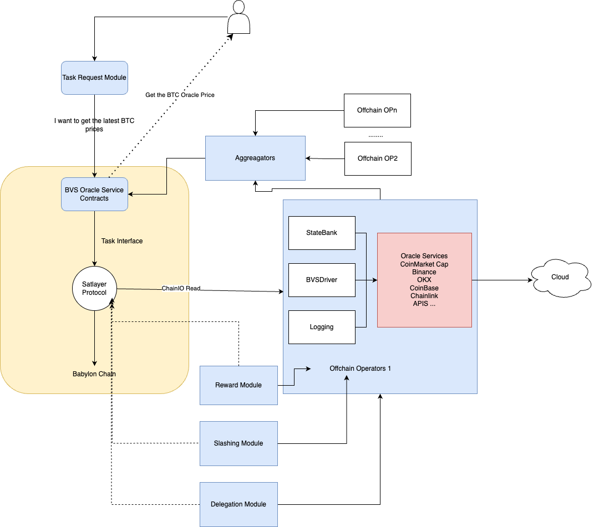

🔮 First Babylon SatLayer BVS Enabled Oracle Protocol
- What's BVS?
- Architecture Overview
- Security Model
- Technical Implementation
- Demo & Getting Started
🏗️ Architecture Overview

🏗️ BVS'sCore Components
- Task Manager - Broadcasts & monitors oracle tasks
- Offchain Node Network - Decentralized validator network
- Aggregator Service - Consensus & data aggregation
- Economic shared Delegation - Delegate your BTC to trusted operators
- Reward Distribution - Manages Sats² / token rewards
- Slashing - Punishes bad actors
🔒 Security Model
- Bitcoin-Backed Security with BTC collateral
- Multi-Layer Validation (on-chain & off-chain)
- Programmable Slashing Conditions (TODO)
- Verified SatLayer Operator Oversight
🚀 Getting Started
git clone https://github.com/cryptoleek-team/satlayer-bvs-oracle
cd satlayer-oracle-bvs
make install
📚 Documentation & Resources
- Architecture Overview
- API Reference
- Operator Guide